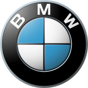

Ce reprezinta BMW?
BMW, acronimul pentru Bayerische Motoren Werke AG (in traducere in romana Uzina Bavareza de Motoare SA), este un producator german de automobile, motociclete si motoare. BMW este o companie germana organizata ca societate pe actiuni, inregistrata in DAX la Bursa din Frankfurt.
In anul 2010, BMW Group a inregistrat cel mai bun an din istorie, cu un total de 1,46 de milioane de livrari, din care 1,22 de milioane de BMW si 234.175 de MINI.
Sigla alb-albastra folosita pana in prezent, utilizeaza aceleasi culori ca ale steagului Bavariei, sugerand simultan o elice alba care se roteste avand ca fundal un albastru similar cu cel al cerului. Originile cadranelor albe si albastre din sigla BMW nu au nimic de-a face cu o elice. In schimb au de-a face cu culorile nationale ale taramului Bavaria, care este desigur inclus in numele companiei.
Se pare ca mitul elicei a fost rezultatul unor publicatii tehnice din anii 1920 ce furnizau informatii despre serviciile oferite pentru motoarele de avioane BMW.

Sigla BMW
Cand BMW a luat fiinta din compania Rapp (sigla celor de la Rapp era reprezentata de un cerc avand in centru capul unui cal negru), au refolosit cercul, si au inserat in centru o imagine in oglinda a culorilor nationale ale Bavariei. Albul si albastrul au fost inversate in cerc fata de pozitia lor pe steagul bavarez, datorita considerentelor legale legate de utilizarea acelui simbol national in cazul unei marci comerciale. Dar corespondenta dintre numele companiei si imaginea din logo a continuat.
Grila Frontala
Grila frontala caracteristica, de forma „rinichi dublu”, a fost prima data folosita la modelul BMW 303, la inceputul anilor 1930.
Firma BMW, este una din marile firme de automobile la nivel mondial, avand ca subdivizii ale sale alte companii producătoare de automobile, cum ar fi: BMW MINI si Rolls-Royce. Formula 1: BMW Sauber, Williams.
Sloganul german original al firmei este „Freude am Fahren”, ceea ce se traduce liber prin: Placere la condus, Placere la volan, in engleza: „The Ultimate Driving Machine”, ceea ce se traduce aproximativ prin: Cea mai sofisticata / Ultima masina de condus.